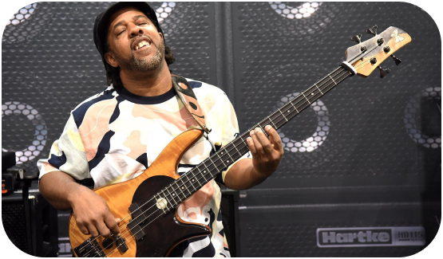

-Electric-
"An electric guitar is one of the many types of guitars that produces sounds through the vibrations of the strings over the pickups. Pickups are the rectangular blocks you see over the body of the guitar. Pickups uses electromagnetic induction to pickup the vibrations but on some occussion there also a non-magnetic ones. these vibration are later fed into an amplifier, which produces the many types of sound. some electric guitar players include Angus Young from the famous band Ac/Dc."
Shop Now>>
-Acoustic-
"An acoustic guitar is a guitar type that in the string family that produces sounds through the hole on their body. Acoustic guitars do not need pickups to produce sounds but in some cases acoustic guitars also have pickups build into them. So you can plug them in an amplifier and amplify their sound. Acoustic Guitars typically have narrower frets than classical guitar and usually comes in steel strings. An example of a well known Acoustic guitar player is Ed Sheeran, with his skills with the loop pedal and the Acoustic guitar. He manage to make a whole band just by himself."

Shop Now>>
-Classical-
"A classical Guitar is the identical twin of the acoustic guitar. The only difference being in a classical guitar the fredboard are a tad wider and the strings are made out of nylon instead of steel. Which made this type of guitar a go to for beginners a like. Classical guitar usually played by using the fingerstyle playing style rather than rythme strumming. An example of a popular classical guitar player is Jason Vieaux."
Shop Now>>
-Bass-
"A bass guitar is a plucked string instrument built in the style of an electric guitar but producing lower frequencies. It produces sound when its metal bass strings vibrate over one or more magnetic pickups (although non-magnetic pickups are occasionally used as well). The pickups then transmit a signal, via instrument cable, into an amplifier, which allows the bass to be heard at a wide range of volumes. An example of a famous bass player is Victor Wooten. With his finesse throughout the fredboard, he can make any key you play sound better or amazing while playing all the wrong notes."

Shop Now>>